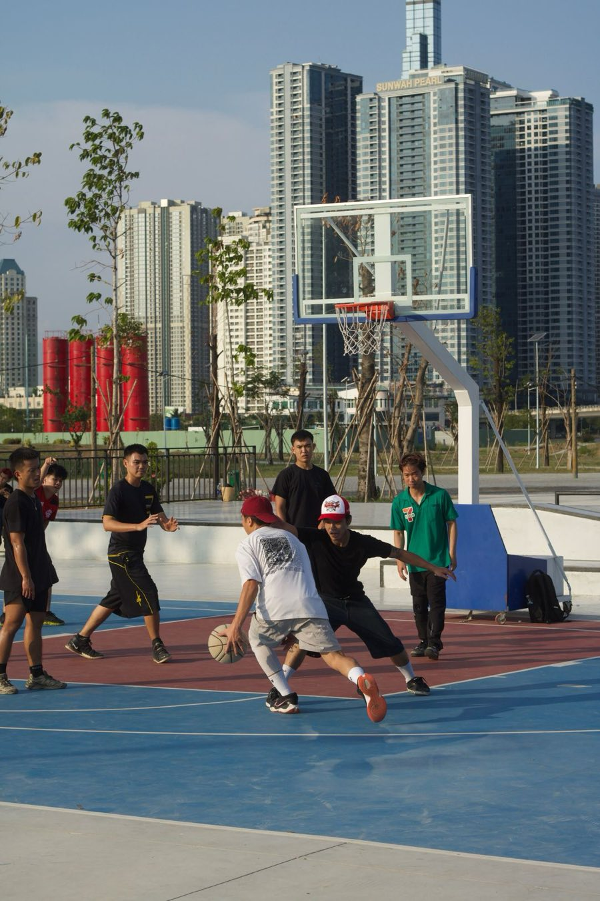
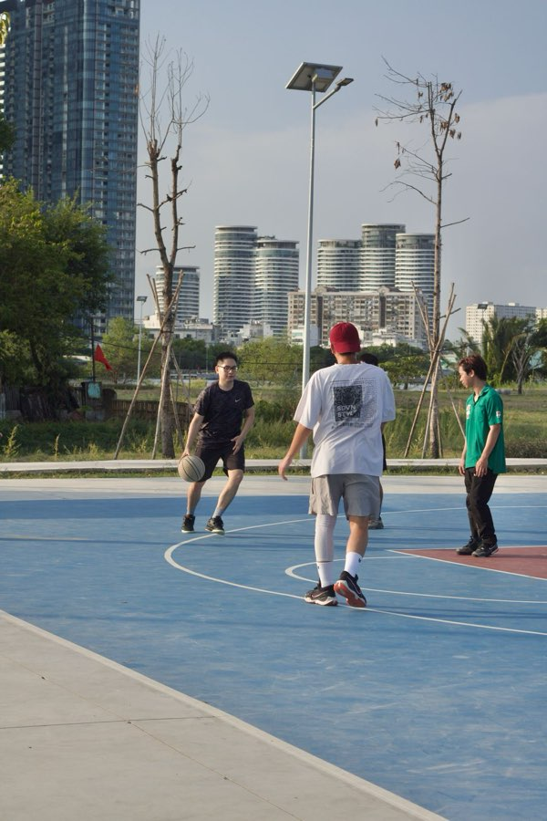
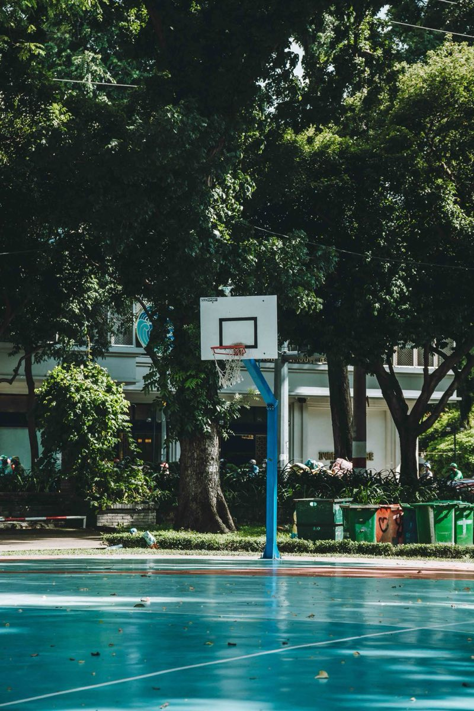

Pickup Today gom các buổi bóng rổ pickup của host và sân về một nơi, giúp host tổ chức gọn gàng, rồi từng bước đưa mỗi trận lên chuyên nghiệp hơn: video, chỉ số, an toàn, và cả những giải đấu do agent vận hành. Bắt đầu từ TP.HCM, hướng tới thể thao Việt Nam.


Đã có những nền tảng quản lý club, lịch chơi và thu phí hoạt động ở Việt Nam, và rất nhiều cộng đồng vẫn sinh hoạt trong nhóm Facebook, Zalo. Trước khi viết dòng mã đầu tiên, tôi khảo sát xem người chơi và host đang thật sự làm gì.
7 trên 12 bài pickup có bình luận kiểu “còn 8 slot”, và có 7 cụm bài được đăng chéo sang 2–3 nhóm.
15 trên 31 bài được tìm thấy qua ảnh đính kèm: ảnh lịch chơi, ảnh thông báo, mẫu bài lặp lại.
Trong 54 sân có tên ở TP.HCM, chỉ 12 sân được từ hai nguồn trở lên xác nhận; 31 sân chưa rõ giá.
Ít nhất sáu cách tính giá: miễn phí, theo giờ, theo lượt, theo ca, theo người, theo tháng.
Nguồn: khảo sát của Battay AI, 20–25/09/2026, gồm 31 bài pickup công khai trên Facebook, 115 điểm sân trên OpenStreetMap, 5 trang tổng hợp sân và trang công khai của một nền tảng quản lý club.
Đứng trước kênh của host, không thay kênh đó. Host vẫn giữ nhóm Zalo, Facebook của mình. Pickup Today cho họ trang buổi công khai và ảnh thông báo làm trong một phút, và mọi bài đăng đều dẫn về một nguồn đúng.
Web app mở từ link hoặc mã QR, không cần cài. Chuyện trò và trả tiền vẫn diễn ra trong nhóm của host. Mỗi dòng dưới đây ghi đúng trạng thái hiện tại.
Số đo: tỉ lệ buổi đủ người theo khu, người chơi quay lại, số phút host bỏ ra cho mỗi buổi, và chi phí thực trên mỗi người đến. Những con số đầu tiên sẽ đến từ các buổi tôi tự host.
Hai agent tôi dựng bằng Claude Code xử lý gần như trọn công việc thiết kế in ấn remote, công việc đang nuôi sống tôi: từ ý tưởng, đọc yêu cầu, dựng file đến tự kiểm lỗi. Tôi giữ bước duyệt cuối. Cũng trên gói đó, tôi xây Pickup Today.
Tem đánh số, mã vạch, dàn đường cắt cho các đơn số lượng lớn.
Làm tem đánh số cho đơn tuần này
Đọc file Excel hướng dẫn in: 3 mã hàng, 1.240 tem
Dựng PDF mỗi tem một trang, đánh số liền 0001–1240
Vector hoá mã vạch, dàn đường cắt
Kiểm bàn giao: số trang, cỡ trang, dãy số, mã vạch
Agent duyệt mù: đạt
Chờ Lộc duyệt rồi mới gửi
Dựng lại tem, nhãn từ ảnh chụp, phác thảo hoặc file cũ; kiểm file trước khi in.
Dựng lại tem 5×3 cm từ ảnh khách gửi
Đo màu từ ảnh, đổi sang CMYK (luật #055)
Dựng file Illustrator, lề xén 9 pt (luật #002)
Dùng lại công thức tem gần nhất
Kiểm file in: lề xén, hệ màu, chữ đã outline
Lỗi mới gặp được ghi thành luật cho lần sau
Chờ Lộc duyệt rồi mới gửi khách
Tầm nhìn của tôi: trận pickup rẻ hơn, chuyên nghiệp hơn, với một cộng đồng phát triển tốt. Tiếp theo là tự động hoá cả một giải đấu bằng các agent vận hành, rồi mang cách làm đó vào hệ sinh thái Battay AI, tới các hệ sinh thái thể thao sẵn có của Việt Nam và sang những môn thể thao khác. Mỗi chặng đều được thử ở sân thật trước khi thành dịch vụ.

Mục tiêu: bóng rổ phong trào dễ tham gia hơn, tổ chức đỡ tốn hơn, người chơi được chăm lo tốt hơn. AI chỉ được thêm vào khi giúp host hoặc người chơi đỡ công thật sự.
Ảnh minh hoạ: The Journey of Frames / PexelsTôi tự trả gói Claude Pro và dùng Claude, Claude Code suốt ngày làm việc. Tôi viết rõ việc cần làm, Claude thực hiện, một bước kiểm độc lập soát lại, và tôi duyệt trước khi bất cứ thứ gì được giao đi. Mọi quyết định của Pickup Today được ghi lại bằng lời của tôi.
Thống kê Claude Code trên máy của tôi, từ cuối 07/2026 đến 10/10/2026, gồm cả việc in ấn và Pickup Today.
Thống kê Claude Code trên máy của tôi, từ cuối 07/2026 đến 10/10/2026, gồm cả việc in ấn và Pickup Today. Ngoài ra: website cho một khách trả tiền, 28 bản trong 5 ngày, làm cùng Claude.
Tôi tự trả Claude Pro và ChatGPT. Một gói Claude đang gánh cả việc in ấn có trả phí lẫn việc xây Pickup Today.
Tôi sẽ tự bỏ tiền mua camera 360 để quay các buổi chơi, thử video xem lại và quy trình agent xử lý video.
Bạn là host, chủ sân, người chơi, hay muốn đồng hành cùng Pickup Today? Rất mong nhận được thư của bạn.